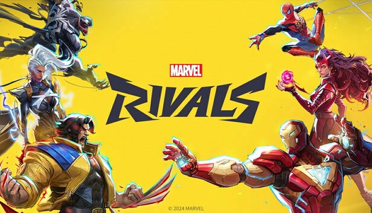

My Favorite Books
On this page I am going to talk about my favorite books.
> These are my favorite books/movies/games


On this page I am going to talk about my favorite books.
The Great Gatsby:
From the story telling, to the characters, and the world building, The Great Gatsby is a masterpiece.
Crafted from true stories and tales from New York City, Gatsby is a man made from money and lies.
Gatsby was a true legend to the rich. One day he "fatefully" met his friend, Nick, who was the average New York citizen.
The two earn a great bond and live through together, oblivious of Gatsby's great plan to use him to find his first love. This story is about hardships and relationships, mysteries and lies.
There are many hidden secrets and it is up to the reader to like Gatsby or not.
Dog Man:
The tragedy of a man being in the police force, he is injured and his body beyond repair. And a man's best friend, his dog.
Who builds the courage to fuse their bodies together so that they could both live.
Dog Man is created.
Dog Man is justice personified, a great police force officer. With the body of a man and head of a dog. He fights great evil.
From crazy doctor super villains, to small street thugs. Dog Man is always there to serve Justice.
Jojo Rabbit: This movie is about the WWII scene. How a young child in the N*zi youth party is raised to be a soldier to fight in WWII And how he has psychological problems to believe that the Fuher is there by his side at all times. An overall sad and very psychological movie about how young children were raised to fight for all the wrong reasons.
Marvel Rivals:
This game is the epitome of what ALL new games should be built like. This is what computers of high quality were made for. And this game exceeded all expectations made for it. Not only is it a fun time waster, but it is addicting as it is good looking. From the gameplay to the designs, the map building, the characters. All were perfectly made. This game is very good despite it needing really advanced processors to run it. It is worth it though, because this game will rule the future of video game marketing.